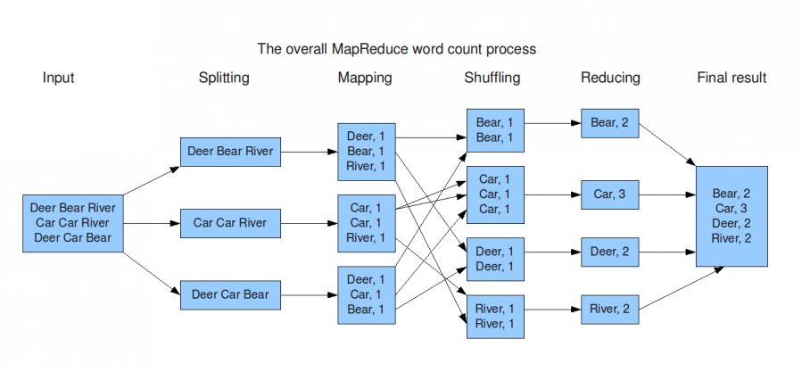

R und Big(ger than memory) Data
Dr. Lars E. Kroll
Fachbereich Data Science und Versorgungsanalysen 
Stand: 17.04.2020
Hintergrund
Was ist das Problem?
R ist bei kleinen Datensätzen sehr schnell, weil es alle Daten im Arbeitsspeicher des Computers hält.
Dies wird, wenn Datensätze analysiert werden sollen, bei Arbeit mit R wird im Vergleich zu Paketen wie sas oder SPSS problematisch.
Diese Präsentation führt in Techniken zur Analyse von Datensätzen ein, die auf die Festplatte eines Computers, nicht aber komplett in seinen Speicher passen.
Technischer Hintergrund

Arbeitsspeicher (RAM) ist 100 mal schneller als eine klassische Festplatte und 4 mal schneller als der schnellste M2 PCIE4 SSD Speicher. Je mehr Daten im RAM analysiert werden, desto besser.
Lösungsansätze
Um große Datensätze mit R zu bearbeiten stehen verschiedene Lösungsansätze zur Verfügung:
Gute Lösungen aber heute nicht Thema:
- Mehr RAM kaufen (bis zu 256GB sind aktuell möglich)
- Arbeit mit Zufallsstichproben und verkleinerten Datensätzen
Heute Thema
- Arbeiten mit R und
DBIdirekt auf Datenbanken - Parallelisierung von gestückelten Daten
Arbeit mit Datenbanken
R und Datenbanken
Grundsätzlich können Daten, die bereits in einer relationalen oder nicht-relationalen Datenbank vorgehalten werden, immer direkt über geeignete Frontends analysiert werden.
R bietet mit dem Paket DBI aber ebenfalls eine Schnittstelle, um als Frontend einer Datenbank zu fungieren (mehr Informationen).
R ist aber auch in der Lage, Datensätze ohne Installation zusätzlicher Software in eine Datenbank auszulagern und auf dieser zu analysieren. Dadurch ist eine Nutzung von R mit Datensätzen möglich, die nicht in den Speicher des lokalen PC passen.
Das Vorgehen soll exemplarisch mit dem Beispieldaten nycflights13 veranschaulicht werden.
Testdatensatz nycflights13
Der Testdatensatz umfasst 336776 Inlandsflüge, die im Jahr 2013 von den Flughäfen der Stadt New York City in Richtung von Zielen innerhalb der USA gestartet sind.
Als zusätzliche Metadaten sind Informationen zu Airlines, Flughäfen, Wetter und Flugzeugen enthalten.
Der Datensatz passt zwar in der Regel in den Arbeitsspeicher, alle Techniken funktionieren aber auch mit größeren Datensätzen.
Erzeugen der Testdateien als csv
Hier werden aus dem mitgelieferten Beispieldaten csv Dateien erstellt und gespeichert. In der Realität liegen wahrscheinlich bereits csv-Dateien vor, die bspw. mit dem SQL Navigator o.ä. aus einer DB extrahiert wurden.
Erzeugen einer Datenbank aus den Testdateien
Es ist mit R möglich, große csv-Dateien in einer Datenbank zu speichern, ohne sie vorher in den Arbeitsspeicher zu laden.
# Create an empty DB
library("RSQLite")
mylocaldb <- dbConnect(RSQLite::SQLite(), "data/mylocaldb.sqlite")
for (myname in c("flights","airlines","airports","planes")) {
dbWriteTable(conn = mylocaldb, name = myname,
value = paste0("data/",myname,".csv"),
row.names = FALSE, header = TRUE, overwrite=TRUE)
}Tabellen mit R verknüpfen:
Was sind die 4 Flugzeuge mit den meisten Starts in NYC 2013?
flights %>% count(tailnum) %>% arrange(-n) %>% filter(tailnum!="NA") %>%
head(4) %>% left_join(planes,by="tailnum") %>%
mutate(model=paste(manufacturer,model)) %>%
select(Kennung=tailnum,"Starts"=n,Modell=model,Baujahr=year) %>%
mykable()| Kennung | Starts | Modell | Baujahr |
|---|---|---|---|
| “N725MQ” | 575 | ||
| “N722MQ” | 513 | ||
| “N723MQ” | 507 | ||
| “N711MQ” | 486 | “GULFSTREAM AEROSPACE” “G1159B” | 1.976 |
Inlands-Flugziele von NYC mit mehr als 2500 Flügen 2013
- Schritt: Flugrouten auszählen
allflights <- flights %>% group_by(origin,dest) %>% count() %>%
ungroup() %>% mutate(id=row_number())
plotdata <- bind_rows(
allflights %>% select(id,n,faa=origin) %>% left_join(.,
airports %>% select(faa,lat,lon)) %>%
collect() %>% mutate(type="origin"),allflights %>%
select(id,n,faa=dest) %>% left_join(.,airports %>%
select(faa,lat,lon)) %>% collect() %>% mutate(type="destination"))- Schritt: Geodaten laden und Ergebnisdatensatz erstellen
library("sf")
library("rnaturalearth")
world <- ne_countries(scale = "medium", returnclass = "sf")
connections_sf <- plotdata %>% filter(!is.na(lat)) %>%
st_as_sf(coords = c("lon", "lat"), crs = 4326, agr = "constant") %>%
group_by(id) %>% summarise(do_union = FALSE) %>%
st_cast("LINESTRING") %>% left_join(plotdata %>% select(id,n))- Schritt: Ergebnis mit ggplot und Hintergrundkarte plotten
ggplot(connections_sf) + theme_void() +
geom_sf(data=world,fill="lightgrey") +
geom_sf(data=.%>% filter(n<=2500),
show.legend = F,color="darkgrey")+
geom_sf(data=.%>% filter(n>2500),
show.legend = F,color="darkred",size=1.5) +
coord_sf(expand=FALSE,
xlim =c(st_bbox(connections_sf)[1],st_bbox(connections_sf)[3]),
ylim=c(st_bbox(connections_sf)[2],st_bbox(connections_sf)[4]))
Regressionsanalyse
Fragestellung:
Ist ein Flug von NYC umso pünktlicher, je weiter sein Ziel entfernt ist?
Es gibt verschiedene Pakete. Wir haben uns für das Paket biglm entschieden, dass die Daten Stückweise in den Arbeitsspeicher des PCs lädt.
Es gibt auch Ansätze, Modelle direkt auf Datenbanken zu rechnen. Hier werden alle Arbeitsschritte in SQL übersetzt und anschließend auf dem Backend ausgeführt. Dies ist bisher aber nur für wenige Modelle sinnvoll möglich. Mehr dazu hier: tidymodels
Ergebnistabelle:
model <- flights %>% mutate(distance=distance/1000,
quartal=as.character(floor(month/4)+1)) %>%
biglm::biglm(dep_delay~1+distance+quartal, data=.)
broom::tidy(model) %>% mykable()| term | estimate | std.error | p.value |
|---|---|---|---|
| (Intercept) | 12,049 | 0,168 | 0 |
| distance | -1,001 | 0,093 | 0 |
| quartal2.0 | 5,890 | 0,182 | 0 |
| quartal3.0 | -3,288 | 0,182 | 0 |
| quartal4.0 | 4,989 | 0,274 | 0 |
Geschwindigkeitsvorteil durch Datenbank?
Nein, die Arbeit mit einer DB als Backend ist deutlich langsamer als die Arbeit im Arbeitsspeicher!
flights_ram<- flights %>% collect()
start_time <- Sys.time()
result <- flights_ram %>% group_by(carrier) %>%
summarise(Mean_delay=mean(sched_dep_time-dep_time,na.rm=T))
end_time <- Sys.time()
t_ram <- round((end_time - start_time)*1000)| Method | Result (msec) |
|---|---|
| RAM | 43 |
| SQLITE | 183 |
Zwischenfazit Datenbanken
- Mit Datenbanken als Backend für R lassen sich die meisten deskriptiven Aufgaben bearbeiten.
- Hierbei kann die vielen bekannte tidyverse Syntax genutzt werden.
- Es stehen Schnittstellen für die meisten Backends zur Verfügung, mehr dazu hier.
- Die Nutzung von Datenbanken als Backend bietet gegenüber der Arbeit im Arbeitsspeicher jedoch Geschwindigkeitsnachteile.
- Datenbanken sollten für Analysen nur genutzt werden, wenn die Daten nicht in den Arbeitsspeicher passen.
Arbeit mit “Big Data Lösungen”
Was machen “Big Data Lösungen” anders?
Das Konzept MapReduce ist die Basis vieler “Big Data Lösungen”
Relationale Datenbanken gehen Tabellen i.d.R. zeilenweise durch, um ein Ergebnis zu generieren.
Demgegenüber setzen Lösungen für verteiltes Rechnen auf Varianten des von Google entwickelten Programmschemas “MapReduce”.
 (Quelle: Groningen 2009)
Prinzip
Eine Datenbank arbeit in der Regel sequentiell und benötigt für n Zeilen n Arbeitsschritte, um ein Ergebnis zu generieren.
Ein verteilter Ansatz benötigt zwar mehr Schritte (n+m+r mit m:Mapping, r:Reduktion) verteilt diese aber auf mehre Knoten.
Die Analysezeit steigt im Fall der Datenbanken also proportional zur Anzahl der Zeilen, während sie bei MapReduce-Ansatz proportional zur Zahl der Knoten sinkt.
Je größer n wird, desto mehr Vorteile hat MapReduce gegenüber eine sequentiellen Verarbeitung.
Hypothetischer Geschwindigkeitsvergleich
Je höher die Zahl der Knoten, desto größer ist der Overhead durch den Algorithmus, aber auch der potentielle Geschwindigkeitsvorteil bei sehr großen Datenmengen.
| Zeilen | Dauer pro Zeile | Knoten | Overhead | Dauer DB | Dauer MR | Unterschied |
|---|---|---|---|---|---|---|
| 1.000 | 0,001 | 6 | 1,2 | 1 | 1 | 138 % |
| 10.000 | 0,001 | 6 | 1,2 | 10 | 3 | 29 % |
| 100.000 | 0,001 | 6 | 1,2 | 100 | 18 | 18 % |
| 1.000.000 | 0,001 | 6 | 1,2 | 1.000 | 168 | 17 % |
| 10.000.000 | 0,001 | 6 | 1,2 | 10.000 | 1.668 | 17 % |
| 100.000.000 | 0,001 | 6 | 1,2 | 100.000 | 16.668 | 17 % |
| 1.000.000.000 | 0,001 | 6 | 1,2 | 1.000.000 | 166.668 | 17 % |
| 10.000.000.000 | 0,001 | 6 | 1,2 | 10.000.000 | 1.666.668 | 17 % |
Annahme:
Der Overhead für MapReduce Operationen entspricht etwa 0.1 * (Maps+Reduces) = 0.1 * 2 * Knoten
Softwarebibliotheken
Hadoop verteiltes Dateisystem auf Basis des MapReduce Prinzips, dass nach dem Prinzip eines Festplatten-RAID Systems funktioniert.
Apache Spark ist ein Framework für Cluster Computing das auf Hadoop basiert. Es setzt statt auf Festplattenspeicher aber konsequent auf die Analyse der Daten im Arbeitsspeicher.
CUDA ist eine vergleichbare Implementierung zum parallelen Ausführung gleichförmiger Aufgaben auf den Kernen von Grafikprozessoren (GPU).
Disk.Frame und dask sind R (bzw. Python) Bibliotheken, die für die hoch parallelisierte Arbeit auf lokalen Rechnern nutzbar sind.
Tensorflow GPU, RAPIDS und BlazingSQL nutzen GPUs für noch höhere Geschwindigkeiten. Sie sind nur in Python voll implementiert und erfordern teilweise Linux als OS.
Die Bibliothek disk.frames für R
Das Paket disk.frame wurde entwickelt, um mit R Daten parallelisiert zur analysieren, die nicht in den Arbeitsspeicher (RAM) passen. Es teilt den Datensatz dazu in Einzeldatensätze auf.
Diese Einzeldatensätze werden in einem Ordner gespeichert und können gemeinsam mit R wie ein großer Datensatz analysiert werden.
Der Ansatz von disk.frame ähnelt dabei Apache Spark, Dask und ähnlichen Systemen. Er ist besonders für medium sized data geeignet, die nicht in den RAM, wohl aber auf die Festplatte passen.
Für medium sized data, ist die Nutzung eines Computer-Clusters nicht nötig, durch disk.frame wird der Overhead bei vergleichbarer Performance deutlich reduziert
Wichtige Konzepte
disk.frame nutzt wie die meisten Frameworks für verteilte Analysen die Konzepte chunks und shards bei der Datenaufteilung. Der Umgang damit ist zentral, für die Performance des Frameworks.
Die Einzeldatensätze werden als “chunks” bezeichnet. Sie haben eine feste Größe. Ihre Größe kann entweder durch den Parameter Anzahl der Chunks oder durch den Parameter Chunk-Größe beeinflusst werden.
Falls bestimmte Partitionen der Daten regelhaft vorkommen, bietet es sich an, die Einzeldatensätze in shards aufgrund eines sog. sharding-keys zu gruppieren. Dadurch können große Teile der Daten herausgefiltert werde und die Analyse wird beschleunigt. Dies funktioniert umso effektiver, je gleicher sich die Werte des sharding keys in den Daten verteilen (bspw. KV, Quartal, BSNR bei amb. Abrechnungsdaten).
disk.frame Geschwindigkeitstest
Die chunk-Anzahl entspricht hier der Anzahl der CPUs (max. Performance).
suppressPackageStartupMessages(library(disk.frame))
setup_disk.frame() # 6 Workers
dfflights <- csv_to_disk.frame(
"data/flights.csv", outdir = "data/tmp_flights.df", overwrite = T)Die Analyse dauert mit 186 ms zwar länger als im RAM (43 ms), ist aber bereits mit diesem Datensatz, trotz des Overheads durch die Parallelisierung, ebenso schnell wie SQLite (183).
Hinweis: Die Ergebnisse für disk.frames und SQLite variieren, je nach momentaner Auslastung der Festplatte.
Logistische Regression
Frage: Haben Nachtflüge häufiger >10 Min. Verspätung?
dfflights <- csv_to_disk.frame("data/flights.csv",
outdir = "data/tmp_flights.df", overwrite = T)
dfflights %>% mutate(delayed=dep_delay>10,
distance=distance/1000,
nightstart = (dep_time<600) |(dep_time>2000)) %>%
dfglm(delayed~1+distance+nightstart ,data=., family=binomial()) %>%
broom::tidy(exponentiate=TRUE,conf.int=TRUE) %>% mykable()| term | estimate | std.error | p.value | conf.low | conf.high |
|---|---|---|---|---|---|
| (Intercept) | 0,296 | 0,007 | 0 | 0,292 | 0,301 |
| distance | 0,958 | 0,006 | 0 | 0,947 | 0,969 |
| nightstartTRUE | 2,957 | 0,011 | 0 | 2,896 | 3,020 |
Man sollte lieber tagsüber von NYC starten…
Fazit
- Insgesamt bietet R verschiedene Möglichkeiten, mit großen Datensätzen zu arbeiten.
- Ein einfachste Weg ist die Nutzung einer SQLite Datenbank als Backend.
- Mit der neuen R-Bibliothek “disk.frame” ist demgegenüber aber ein zusätzlicher Performancegewinn zu erzielen.
- Hinsichtlich der Nutzbarkeit statistischen Verfahren bestehen bei großen Datensätzen einige Limitationen, da nicht alle Modelle implementiert sind.
- Viele Viele Regressionsanalysen sind möglich (alle glm-Modelle, wie lineare und logistische Regression)